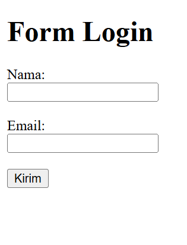

Oleh: Christian Xavier | Kategori: Web Design
Untuk menerima input dari pengguna, HTML menyediakan tag <form>. Di dalamnya terdapat beberapa elemen penting seperti <input>, <label>, dan <button> yang digunakan untuk membuat form interaktif pada halaman web.

Berikut adalah contoh sederhana form yang digunakan untuk mengisi data nama dan email pengguna.
<form>
<label>Nama:</label><br>
<input type="text" name="nama"><br><br>
<label>Email:</label><br>
<input type="email" name="email"><br><br>
<button type="submit">Kirim</button>
</form>
Dengan menggunakan tag form, sebuah website dapat berinteraksi langsung dengan pengguna. Form sering digunakan pada halaman pendaftaran, login, buku tamu, dan berbagai kebutuhan input data lainnya.